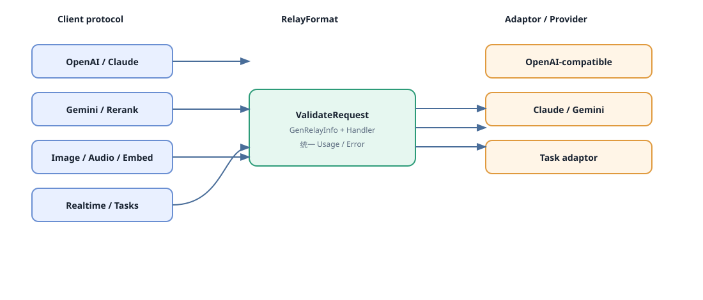

Chapter 06 · Adapters
从统一入口到供应商协议
RelayFormat 描述客户端入口，Channel Type 描述下游供应商。Adaptor 吸收 URL、认证头、请求体和响应差异。
一条同步请求

relay.GetAdaptor(apiType)根据渠道类型创建实现。relay/compatible_handler.go应用模型映射、pass-through、参数/请求头覆盖。- Adaptor 构建 URL/Header/Body，
DoRequest调用上游。 DoResponse解析 JSON、SSE 或错误，写入 Usage 与RelayInfo。
Adaptor 契约（代码真实接口）
type Adaptor interface {
Init(info *relaycommon.RelayInfo)
GetRequestURL(info *relaycommon.RelayInfo) (string, error)
SetupRequestHeader(c *gin.Context, req *http.Header, info *relaycommon.RelayInfo) error
ConvertOpenAIRequest(...); ConvertRerankRequest(...)
ConvertEmbeddingRequest(...); ConvertAudioRequest(...)
ConvertImageRequest(...); ConvertOpenAIResponsesRequest(...)
ConvertClaudeRequest(...); ConvertGeminiRequest(...)
DoRequest(c *gin.Context, info *RelayInfo, body io.Reader) (any,error)
DoResponse(c *gin.Context, resp *http.Response, info *RelayInfo) (any,*types.NewAPIError)
GetModelList() []string; GetChannelName() string
}完整签名见 relay/channel/adapter.go。不要在文档或新适配器中虚构 Usage/Error 方法；Usage 由各实现的 DoResponse 结果进入公共结算路径。
请求入口与转换矩阵
| 入口 | RelayFormat/转换方法 | 典型下游 | 响应形态 |
|---|---|---|---|
/v1/chat/completions | OpenAI → ConvertOpenAIRequest | OpenAI-compatible、Claude、Gemini 等 | JSON/SSE |
/v1/responses | ConvertOpenAIResponsesRequest | Responses/Codex 兼容渠道 | JSON/SSE |
/v1/messages | ConvertClaudeRequest | Anthropic/兼容渠道 | JSON/SSE |
/v1beta/models/*path | ConvertGeminiRequest | Gemini/Vertex | JSON/SSE |
/v1/rerank | ConvertRerankRequest | Cohere/Jina/阿里云 | JSON |
| Embedding/Image/Audio | 对应 Convert* 方法 | 供应商专用接口 | JSON/二进制 |
TaskAdaptor：异步供应商
ValidateRequestAndSetAction → EstimateBilling → BuildRequestURL/Header/Body → DoRequest/DoResponse (taskID) → FetchTask → ParseTaskResult → AdjustBillingOnSubmit / AdjustBillingOnComplete
EstimateBilling 在提交前产生时长、尺寸等倍率；AdjustBillingOnSubmit 可依据上游实际参数修正；终态由 AdjustBillingOnComplete 返回实际 quota。实现必须保证倍率有界且非负。
接口定义：relay/channel/adapter.go:TaskAdaptor；任务入口：controller/relay.go:RelayTask 及对应 task controller。
新增适配器检查表
- 注册 ChannelType/APIType，并声明支持的模型与路径。
- 实现 URL、Header、请求体和错误/响应解析；保留请求显式零值。
- 确认是否支持 StreamOptions，并加入流式支持集合。
- DoResponse 能提取真实 Usage 或明确无 Usage 的安全回退。
- 模型映射、参数覆盖、代理、超时和多 Key 行为可测试。
- 为正常、流式、上游 4xx/5xx、空 Usage 和重试编写契约测试。